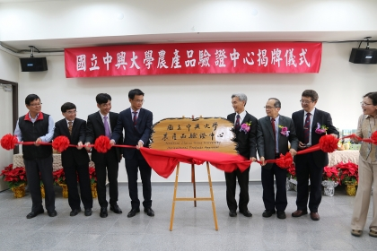

|  | [Public Relations Group] Zhongxing University's Agricultural Products Verification Center Unveiled and Entered the New Page of the Food Security Building Exhibition |
|---|---|
| It has been 13 years since the establishment of the Agricultural Products Verification Center of National Chung Hsing University, with more than 1,900 verifications. It is a fairly credible verification agency in China. In 109, it officially entered the new site of the fourth floor of the Xingda "Food and Agricultural Safety Inspection Building", on the morning of January 6th. Hold the unveiling ceremony. It was jointly unveiled by Xue Fusheng, President of Chung Hsing University, Chen Jizhong, Chairman of the Council of Agriculture of the Executive Yuan, and Duan Shuren, Director of the Verification Center. This center was established on May 11, 1996. After (97) years, it has passed the National Certification Foundation (TAF) certification, obtained the qualification of production and sales history agricultural products and organic agricultural products verification, and is responsible for the public inspection of agricultural products. The heavy responsibility of safety. The center has a strong lineup of experts in agriculture and an audit team, and spares no effort in monitoring food safety and cultivating talents. In addition to handling production and sales resumes and verification of organic agricultural products, it also cooperates with government policies to promote a number of tasks, such as: organic agricultural commercialization materials review, verification of flowers exported to Australia, international organic equivalence evaluation, Tokyo Olympic food supply, organic and friendly environment farming and cultivation Integration of manuals, Good Agricultural Practices for Vegetables (TGAP), etc., and actively train agricultural product auditors and safety management personnel, and regularly hold educational training courses such as: agricultural product auditor training courses, ISO 9001, ISO 22000, HACCP, GLOBALG.AP, Introduction to Agriculture There are more than 1,000 trainees in other courses. | |
 |
[Public Relations Group] Zhongxing University established a smart agriculture R&D center combining AI and agriculture to help industry upgrade |
| Combining AI and agricultural talents to build Taiwan into a smart agricultural town. The National Chung Hsing University, which has been established for a century and has received international recognition for agricultural research, held the opening and seminar of the "Smart Agriculture R&D Center" on December 27. The center will serve as a platform for industry-government-academic collaboration to provide precision agriculture, facility agriculture, ecological agriculture, Based on the six major themes of forestry, animal husbandry and aquaculture, artificial intelligence is introduced to assist in the upgrading of agriculture, and to bring Taiwan's agriculture out to connect with the land, the world, and the future. The opening ceremony was jointly launched by Xingda President Xue Fusheng, Director of the Science and Technology Department of the Council of Agriculture Wang Shixian, Deputy Director Cai Zhirong of the Agricultural Laboratory, Vice President Zhou Zhihong of Xingda University, Vice President Huang Zhenwen, Dean of the School of Agricultural Materials Zhan Fuzhi and others. The center is jointly funded by the Executive Yuan Committee of Agriculture and Chung Hsing University. It is planned by Zhou Zhihong, Vice President of Xingda University, Zhan Fuzhi, Dean of the Faculty of Agricultural Materials, Yang Mingde, Distinguished Professor of the Department of Civil Engineering, and Yang Jingying, Associate Professor of the Department of Agronomy, Director of the Science and Technology Department of the Committee of Agriculture Assisted in planning with the Agricultural Laboratory. The office is located on the 7th floor of the Xingda Food and Agricultural Safety Inspection Building to provide intelligent agricultural research and development and promotion services. | |
 |
[Media Report] To celebrate the 100th Anniversary and Christmas, the "Tree of Hope" of Chung Hsing University will be unveiled tonight |
| Christmas Day is approaching, the Huisun Forest Farm of National Chung Hsing University, Renai Township, Nantou County, has decorated 7 Taiwan cedar trees up to 20 meters high with colorful LED bulbs and named them "Tree of Hope" for many years, officially tonight Lighting up the lights, this year coincides with the 100th anniversary of the establishment of Chung Hsing University, and a special school celebration lighting has been added to accompany tourists with the "tree of hope" to celebrate Christmas, New Year's Eve, and last until the Spring Festival and Lantern Festival next year. Taiwan fir is endemic to Taiwan and belongs to the genus Taiwan fir in the Cupressaceae family. It is also very rare with the name "Taiwan". Taiwan fir can grow up to 90 meters in height and is one of the highest tree species in Asia. The aboriginal people of the Kai tribe describe its tallness as "a tree that hits the moon." The large turf in the Huisun Forest Farm has 7 Taiwan cedar trees about 20 meters high. The tree is beautiful and has become a representative landscape of the forest farm. One. |